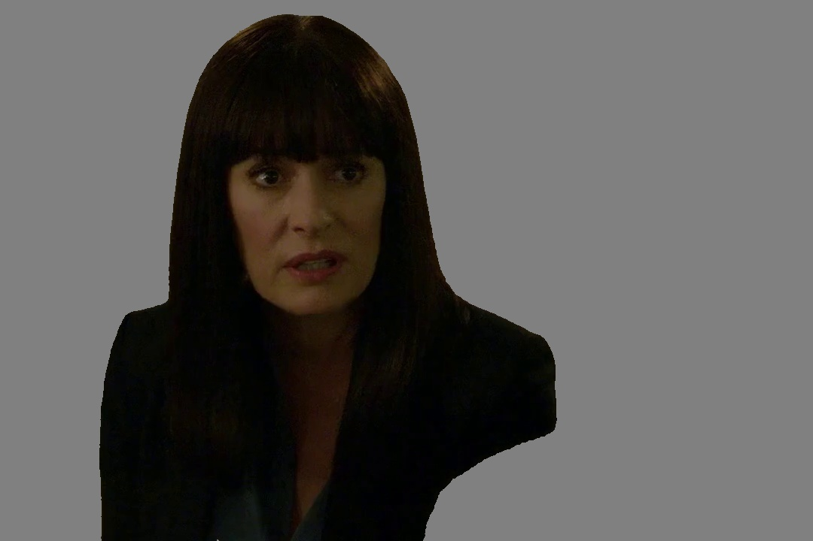
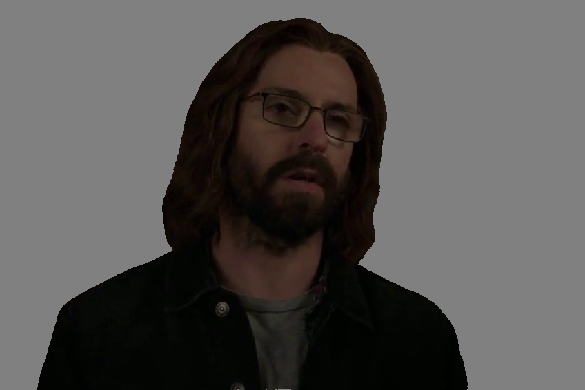
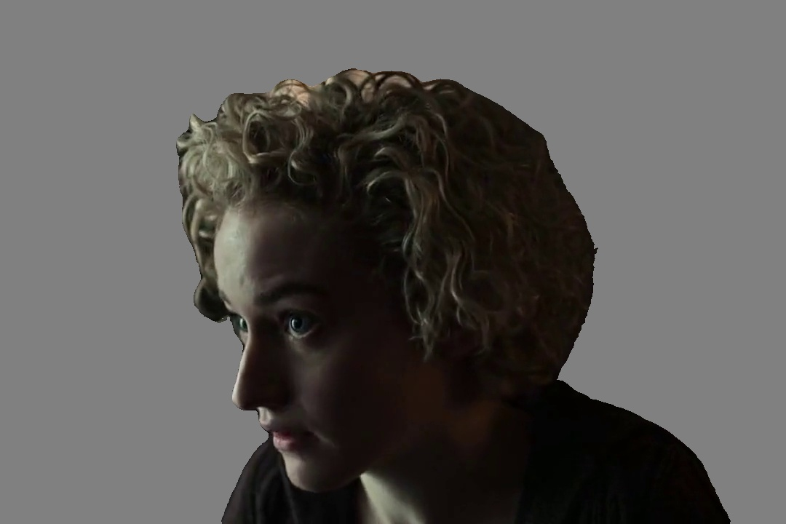
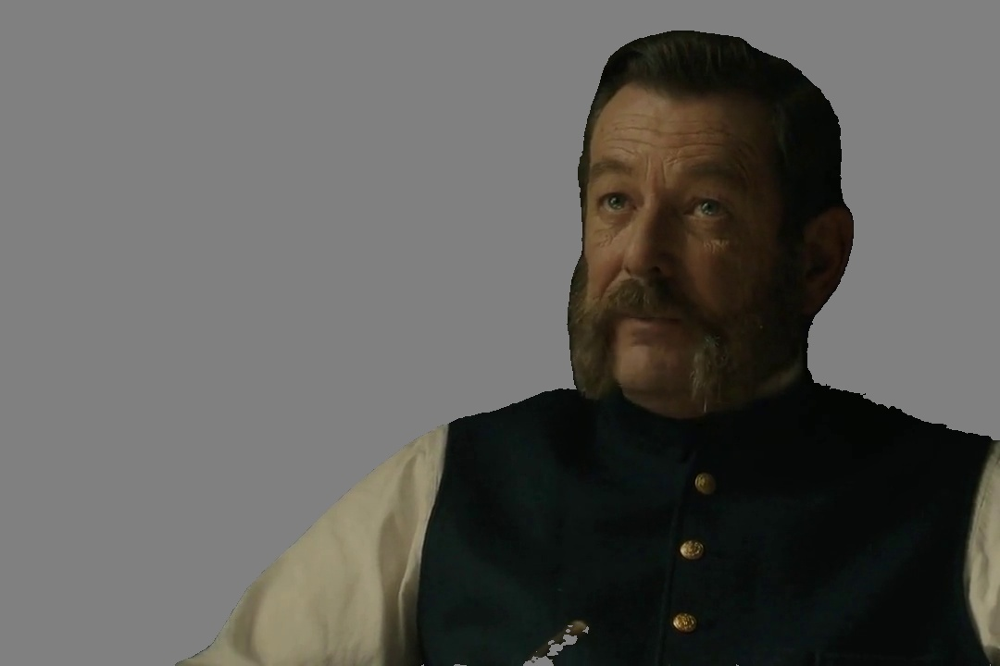

Ref Audio + Pose + Ref Image → Generated Audio-Video
Given a reference image, an audio clip, and a pose sequence video, our model generates a realistic video with matching appearance, voice, and pose-guided motion.

Ref ImageRef
AudioPose
Generated
View Caption
[Visual] a woman with long dark hair and bangs, wearing a dark
blazer over a light blue top. She is in a room with a bulletin board in the background,
which has several photos pinned to it. The lighting is dim, creating a somewhat serious
atmosphere. The woman appears to be engaged in a conversation with someone whose back is to
the camera. The person's hair is gray and they are wearing a dark suit. The
woman's expression seems to be one of concern or seriousness.
[Speech] “Whispering is just not enough to induce the baby.”
[Speech] “Whispering is just not enough to induce the baby.”
Ref ImageRef
AudioPose
Generated
View Caption
[Visual] A woman with curly hair, some of which is gray, is shown.
She is wearing a light gray blazer over a white top. She has a necklace on. The background
is a solid brownish color. The woman appears to be speaking, her mouth is slightly open and
her eyes are looking downwards.
[Speech] “it's really important to think about all" followed by a pause and then "the different ways that we can help".”
[Speech] “it's really important to think about all" followed by a pause and then "the different ways that we can help".”
Ref ImageRef
AudioPose
Generated
View Caption
[Visual] a man in a professional setting. He has dark, wavy hair
and is wearing round glasses. His attire includes a gray tweed suit jacket, a light blue
dress shirt, and a patterned tie. The background features a window with a view of greenery
outside, and there are some framed pictures or certificates on the wall. The lighting is
soft and natural, coming from the window.
[Speech] “At the top of all his brilliance he had a genius.”
[Speech] “At the top of all his brilliance he had a genius.”

Ref ImageRef
AudioPose
Generated
View Caption
[Visual] A man with long hair, a beard, and glasses is standing in
a dimly lit room. He is wearing a dark jacket over a gray shirt. Behind him, there is a sign
with the word "piper" partially visible. The background appears to be a door or a
wall with some indistinct shapes and colors.
[Speech] “You fucked around with son of Anton's.”
[Speech] “You fucked around with son of Anton's.”

Ref ImageRef
AudioPose
Generated
View Caption
[Visual] a person with curly, light-colored hair. The lighting is
dim, with a light source coming from behind, creating a silhouette effect. The person is
wearing a dark-colored top. The background is dark and out of focus, with some indistinct
shapes and colors.
[Speech] “Nobody. And you can take over this hall.”
[Speech] “Nobody. And you can take over this hall.”

Ref ImageRef
AudioPose
Generated
View Caption
[Visual] a man with a beard and mustache, wearing a dark vest over
a white shirt. He appears to be in a dimly lit room, possibly a study or office, with a dark
background. The man is looking slightly to the side, and his expression seems serious or
contemplative. There are no other people or objects clearly visible in the frame.
[Speech] “If there's blood on the streets of Chinatown, it's because.".”
[Speech] “If there's blood on the streets of Chinatown, it's because.".”

Ref ImageRef
AudioPose
Generated
View Caption
[Visual] A man is shown in a dimly lit room. He has a receding
hairline, a beard, and is wearing a dark suit with a white shirt and a patterned tie. There
is a small American flag pin on his left lapel. The background appears to be a storage area
with shelves and boxes. The lighting is low, creating a somewhat somber
atmosphere.
[Speech] “I'll have your passport returned.”
[Speech] “I'll have your passport returned.”
Ref ImageRef
AudioPose
Generated
View Caption
[Visual] A man is sitting in a room, talking on a phone. He has
short, graying hair and is wearing a dark-colored long-sleeve shirt. His left hand is
holding the phone to his ear, and his right hand is gesturing as he speaks. The background
shows a softly lit room with some furniture, including a lamp and a cabinet. The overall
lighting is warm and dim.
[Speech] “because if claire doesn't get her halloween she turns into”
[Speech] “because if claire doesn't get her halloween she turns into”